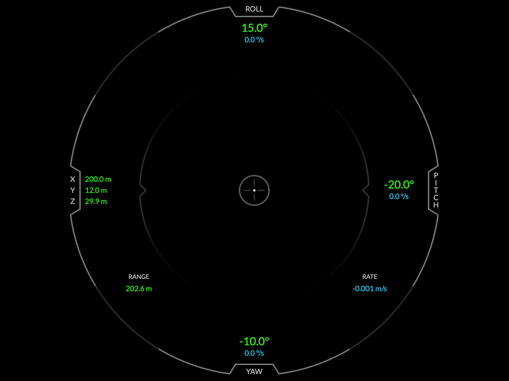
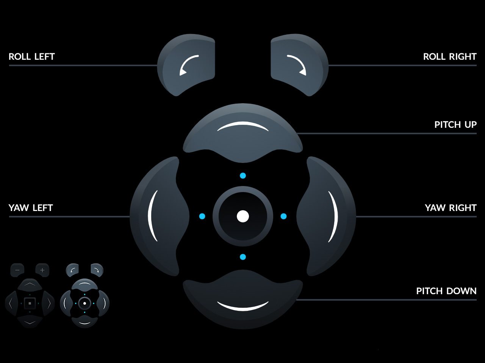
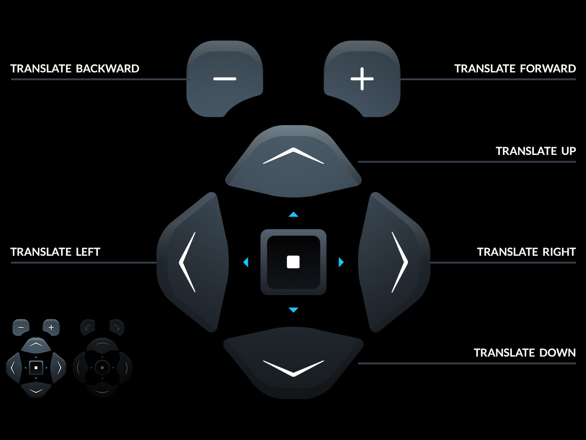
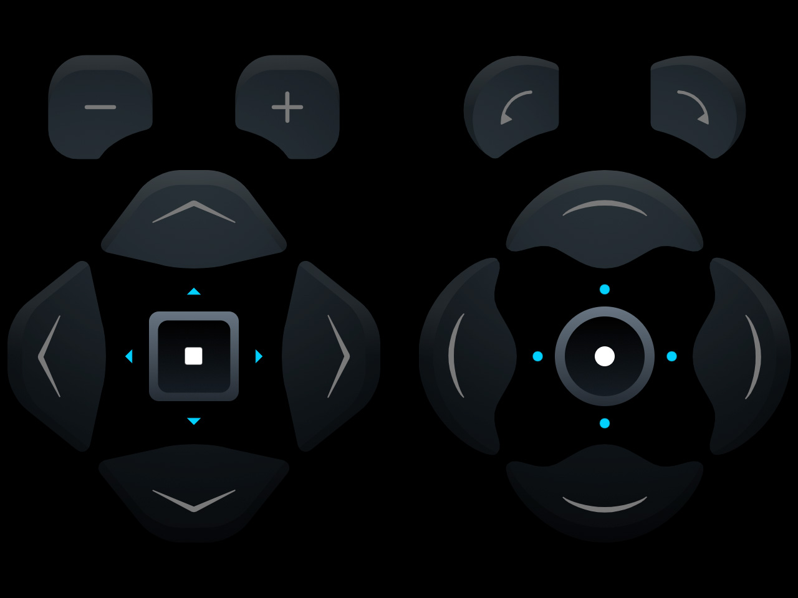
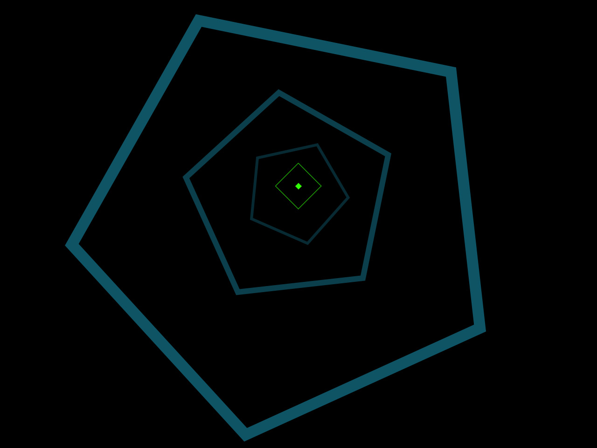
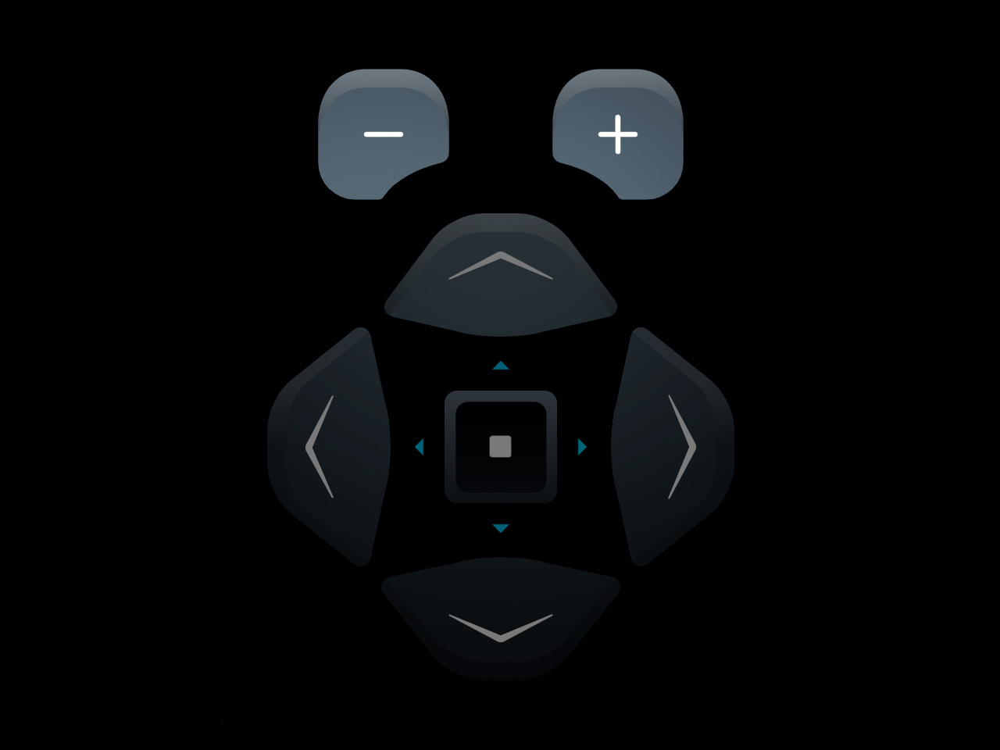

This simulator will familiarize you with the controls of the actual interface used by NASA Astronauts to manually pilot the SpaceX Dragon 2 vehicle to the International Space Station. Successful docking is achieved when all green numbers in the center of the interface are below 0.2. Movement in space is slow and requires patience & precision.
Green numbers are corrections necessary to reach the ISS. Successful docking is achieved when all numbers are below 0.2.
First use the buttons on the right to correct your axes of rotation in Roll, Pitch and Yaw. You must be properly oriented to dock.
Then use the buttons on the left to translate your position Up, Down, Left, Right, Backward or Forward torwards the ISS.
Both controls have a precision toggle at their center. The default settings are small precise movements. Do not use large movements near the ISS.
Your target is the Green Diamond that is overlayed on top of the Docking Adapter. It must be centered in the interface to dock.
Blue numbers are the rates (speed) that you are translating or rotating. Your RATE towards the ISS is located in the bottom right.
Keep your RATE below -0.2 m/s when your range from the ISS is below 5 meters. Go too fast and you risk running into the ISS.
